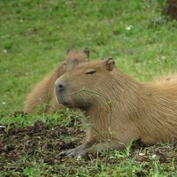
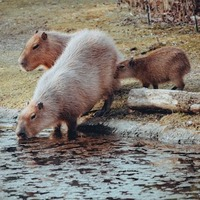
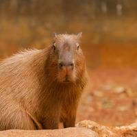

Capybara News
Capybara alone
Capybaras are short-haired brownish rodents with blunt snouts, short legs, small ears, and almost no tail. They are shy and associate in groups along the banks of lakes and rivers. They normally feed in the morning and evening and spend most of the day resting under cover along the banks. They are vegetarian and in cultivated areas sometimes become pests by eating melons, grain, and squash. They swim and dive readily and commonly enter water to elude predators such as jaguars and anacondas. The female bears a single litter of three to eight young each year; gestation takes about 100 to 110 days.
Read MoreCapybara stacked up
Capybaras have a highly social nature and live in large groups, which allows them to feel secure and protected in their environment. They are herbivores and have a diet primarily made up of grasses and aquatic plants, which contributes to their peaceful nature. Capybaras have a slow metabolism, which allows them to conserve energy and remain calm.
Read MoreTriple Capybara
Most explanations of their zen character go back to the fact that capybaras are highly social. They live in groups where they feel protected; that’s why they don't feel anxious when surrounded by other animals. And other animals love capybara’s company because not many wildlife dwellers will let you ride their back just for fun! In this article, you will find some of the cutest pics of capybara friendships.
Read More